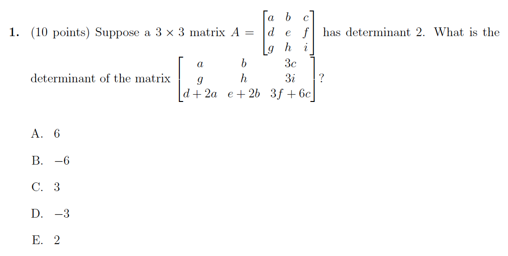
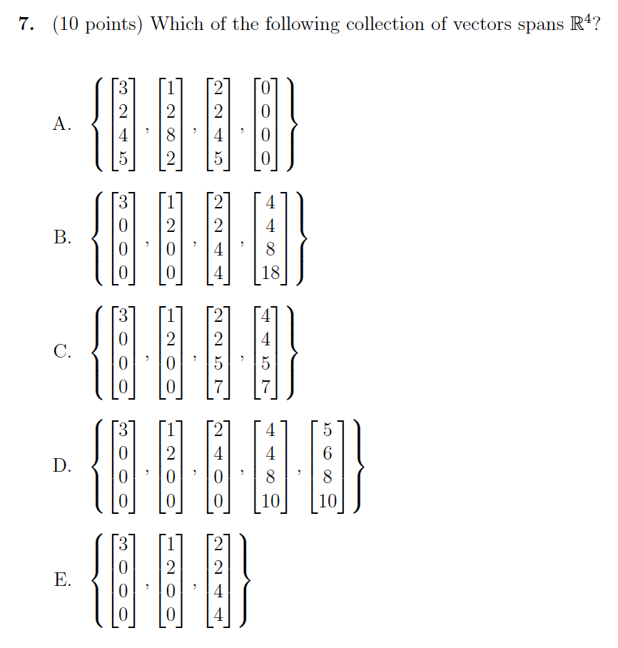

Purdue MA 26500 Spring 2023 Midterm I Solutions
This is the 2nd study notes post for the college linear algebra course. Here is the review of Purdue MA 26500 Spring 2023 midterm I. I provide solutions to all exam questions as well as concise explanations.
Introduction
Purdue University Department of Mathematics provides an introductory-level linear algebra course MA 26500 every semester. Undergraduate students of science and engineering majors taking this course would gain a good mathematical foundation for their advanced studies in machine learning, computer graphics, control theory, etc.
Disclosure: This blog site is reader-supported. When you buy through the affiliate links below, as an Amazon Associate, I earn a tiny commission from qualifying purchases. Thank you.
MA 26500 textbook is Linear Algebra and its Applications (6th Edition) by David C. Lay, Steven R. Lay, and Judi J. McDonald. The authors have also published a student study guide for it, which is available for purchase on Amazon as well.


MA 26500 midterm I covers the topics of Sections 1.1 – 3.3 in the textbook. It is usually scheduled at the beginning of the seventh week. The exam format is a combination of multiple-choice questions and short-answer questions. Students are given one hour to finish answering the exam questions.
Here are a few extra reference links for Purdue MA 26500:
- Purdue Department of Mathematics Course Achive
- Purdue MA 26500 Spring 2024
- Purdue MA 26500 Exam Archive
Spring 2023 Midterm I Solutions
Problem 1 (10 points)

Problem 1 Solution
Referring to Section 3.2 Property of Determinants, we can do row and column operations to efficiently find the determinant of the given matrix.
\[\begin{align} \begin{vmatrix}a &b &3c\\g &h &3i\\d+2a &e+2b &3f+6c\\\end{vmatrix}&=(-1)\cdot\begin{vmatrix}a &b &3c\\d+2a &e+2b &3f+6c\\g &h &3i\\\end{vmatrix}\\ &=(-1)\cdot\begin{vmatrix}a &b &3c\\d &e &3f\\g &h &3i\\\end{vmatrix}= (-1)\cdot3\begin{vmatrix}a &b &c\\d &e &f\\g &h &i\\\end{vmatrix}\\ &=-3\cdot 2=-6 \end{align}\]
The exact sequence of the operations are
- An interchange of rows 2 and 3 reverses the sign of the determinant.
- Adding -2 times row 1 to row 2 does not change the determinant.
- Factoring out a common multiple of column 3.
- Applying the known result of det \(A\).
So the answer is B.
Problem 2 (10 points)
Problem 2 Solution
This problem tests the students' knowledge of rank and dimension. Referring to Section 2.9 Dimension and Rank, we know the following important points:
- Since the pivot columns of \(A\) form a basis for Col \(A\), the rank of \(A\) is just the number of pivot columns in \(A\).
- If a matrix \(A\) has \(n\) columns, then rank \(A\) + dim Nul \(A\) = \(n\).
To find out the number of pivot columns in \(A\), we can do elementary row operations to obtain the Row Echelon Form of matrix \(A\).
\[\begin{align} &\begin{bmatrix}1 &2 &2 &5 &0\\-2 &0 &-2 &2 &-4\\3 &4 &-1 &9 &2\\\end{bmatrix}\sim \begin{bmatrix}1 &2 &2 &5 &0\\0 &4 &-4 &12 &-4\\0 &-2 &2 &-6 &2\\\end{bmatrix}\\ \sim&\begin{bmatrix}1 &2 &2 &5 &0\\0 &1 &-1 &3 &-1\\0 &1 &-1 &3 &-1\\\end{bmatrix}\sim \begin{bmatrix}\color{fuchsia}{1} &2 &2 &5 &0\\0 &\color{fuchsia}{1} &-1 &3 &-1\\0 &0 &0 &0 &0\\\end{bmatrix} \end{align}\]
Now it is clear that this matrix has two pivot columns, thus rank \(A\) is 2, and dim Nul \(A\) is \(5-2=3\).
Since \(5a-3b=5\times 2-3\times 3=1\), the answer is A.
Problem 3 (10 points)
Problem 3 Solution
For such linear transformation \(T:\mathbb R^3\to\mathbb R^3\), onto means for each \(\pmb b\) in the codomain \(\mathbb R^{3}\), there exists at least one solution of \(T(\pmb x)=\pmb b\).
Let's do row reduction first to see
\[\begin{align} &\begin{bmatrix}1 &t &2\\3 &3 &t-5\\2 &0 &0\\\end{bmatrix}\sim \begin{bmatrix}1 &0 &0\\3 &3 &t-5\\1 &t &2\\\end{bmatrix}\sim \begin{bmatrix}1 &0 &0\\1 &1 &\frac{t-5}{3}\\0 &t &2\\\end{bmatrix}\\ \sim&\begin{bmatrix}1 &0 &0\\0 &1 &\frac{t-5}{3}\\0 &t &2\\\end{bmatrix}\sim \begin{bmatrix}1 &0 &0\\0 &1 &\frac{t-5}{3}\\0 &0 &2-\frac{(t-5)t}{3}\\\end{bmatrix} \end{align}\]
Now inspect the entry of row 3 and column 3, it can be factorized as \(\frac{(6-t)(1+t)}{3}\). If \(t\) is 6 or -1, this entry becomes 0. In such cases, for a nonzero \(b_{3}\) of \(\pmb b\) in \(\mathbb R^{3}\), there would be no solution at all.
So to make this linear transformation onto \(\mathbb R^{3}\), \(t\) cannot be 6 or -1. The answer is E.
Problem 4 (10 points)
Problem 4 Solution
Let's inspect the statements one by one.
For (i), from Section 1.7 Linear Independence, because \(A\pmb x=\pmb 0\) has only a trivial solution, the columns of the matrix \(A\) are linearly independent. So there should be at most one solution for these column vectors to combine and obtain, this statement is true.
Statement (ii) is also true. If \(m<n\), according to Theorem 8 of Section 1.7, the set of column vectors is linearly dependent, etc a \(2\times 3\) matrix (see Example 5 of Section 1.7). Then \(A\pmb x=\pmb 0\) has a nontrivial solution. Now referring to Theorem 11 of Section 1.9, this linear transformation of matrix \(A\) is NOT one-to-one.
Thinking of the case \(3\times 2\) for the linear transformation \(T: \mathbb R^2\to\mathbb R^3\), we can get one-to-one mapping. But for \(T: \mathbb R^3\to\mathbb R^2\), there could be more than 1 point in 3D space mapping to a 2D point. It is not one-to-one.
For (iii), certainly this is not true. A simple example can be a \(3\times 2\) matrix like below \[\begin{bmatrix}1 &0\\1 &1\\0 &1\\\end{bmatrix}\] The two columns above are NOT linearly dependent.
Statement (iv) is true as this is the exact case described by Theorem 4 (c) and (d) in Section 1.4.
The answer is D.
Problem 5 (10 points)
Problem 5 Solution
From the given conditions, we know that the columns of \(A\) form a linearly dependent set. Equivalently this means \(A\) is not invertible and \(A\pmb x=\pmb 0\) has two nontrivial solutions \[\begin{align} A\pmb x&=[\pmb a_{1}\,\pmb a_{2}\,\pmb a_{3}\,\pmb a_{4}\,\pmb a_{5}]\begin{bmatrix}5\\1\\-6\\-2\\0\end{bmatrix}=\pmb 0\\ A\pmb x&=[\pmb a_{1}\,\pmb a_{2}\,\pmb a_{3}\,\pmb a_{4}\,\pmb a_{5}]\begin{bmatrix}0\\2\\-7\\1\\3\end{bmatrix}=\pmb 0\\ \end{align}\] So Statement E is false. Moveover, a noninvertible \(A\) has \(\det A = 0\). The statement A is false too.
The two nontrivial solutions for \(A\pmb x=\pmb 0\) are \([5\,\,1\,\,-6\,\,-2\,\,0]^T\) and \([0\,\,2\,\,-7\,\,1\,\,-3]^T\). As they are also linear independent as one is not a multiple of the other, they should be in the basis for Nul \(A\). But we are not sure if there are also other vectors in the basis. We can only deduce that dim Nul \(A\) is at least 2. From this, we decide that statement B is false.
Again because rank \(A\) + dim Nul \(A\) = \(5\), and dim Nul \(A\) is greater than or equal to 2, rank \(A\) must be less than or equal to 3. Statement C is true.
Statement D is not true either, since \([1\,\,2\,\,-7\,\,1\,\,-3]^T\) is not a linear combination of \([5\,\,1\,\,-6\,\,-2\,\,0]^T\) and \([0\,\,2\,\,-7\,\,1\,\,-3]^T\).
So the answer is C.
Problem 6 (10 points)
Problem 6 Solution
Denote the adjugate of \(A\) as \(B=\{b_{ij}\}\), then \(b_{ij}=C_{ji}\), where \(C_{ji}\) is the cofactor of \(A\). Compute two non-corner entries of \(B\) below \[\begin{align} b_{12}&=C_{21}=(-1)^{2+1}\begin{vmatrix}0 &-1\\1 &-1\end{vmatrix}=-1\\ b_{21}&=C_{12}=(-1)^{1+2}\begin{vmatrix}-5 &-1\\3 &-1\end{vmatrix}=-8 \end{align}\]
So the answer is C.
Problem 7 (10 points)

Problem 7 Solution
We need a set of 4 linearly independent vectors to span \(\mathbb R^4\).
Answer A contains the zero vector, thus the set is not linearly independent.
Answer E contains only 3 vectors, not enough as the basis of \(\mathbb R^4\).
Answer D column 3 is 2 times column 2, and column 5 is equal to column 2 and column 4. So it has only 3 linearly independent vectors. Still not enough
Answer C is also not correct. If we scale 1/3 to column 1, and then add it with columns 2 and 3 altogether, it results in column 4. So only 3 linearly independent vectors.
So the answer is B. Indeed B has 4 linearly independent vectors.
Problem 8 (10 points)

Problem 8 Solution
This problem is very similar to Problem 8 of Fall 2022 Midterm I. The solution follows the same steps.
Referring to Theorem 10 of Section 1.9 The Matrix of a Linear Transformation, remember the property \[T(c\pmb u+d\pmb v)=cT(\pmb u)+dT(\pmb v)\] We can use this property to find \(A\).
First, denote \(\pmb u=\begin{bmatrix}1\\1\end{bmatrix}\) and \(\pmb v=\begin{bmatrix}-1\\1\end{bmatrix}\). It is trivial to see that \[\begin{align} \pmb{u}&=1\cdot\begin{bmatrix}1\\0\end{bmatrix}+1\cdot\begin{bmatrix}0\\1\end{bmatrix}=\pmb{e}_1+\pmb{e}_2\\ \pmb{v}&=-1\cdot\begin{bmatrix}1\\0\end{bmatrix}+1\cdot\begin{bmatrix}0\\1\end{bmatrix}=-\pmb{e}_1+\pmb{e}_2\\ \end{align}\] This leads to \[\begin{align} \pmb{e}_1&=\begin{bmatrix}1\\0\end{bmatrix} =\frac{1}{2}\pmb{u}-\frac{1}{2}\pmb{v}\\ \pmb{e}_2&=\begin{bmatrix}0\\1\end{bmatrix} =\frac{1}{2}\pmb{u}+\frac{1}{2}\pmb{v} \end{align}\] Then apply the property and compute \[\begin{align} T(\pmb{e}_1)&=\frac{1}{2}T(\pmb{u})-\frac{1}{2}T(\pmb{v}) =\frac{1}{2}T\left(\begin{bmatrix}1\\1\end{bmatrix}\right)-\frac{1}{2}T\left(\begin{bmatrix}-1\\1\end{bmatrix}\right)=\begin{bmatrix}2\\3\\\end{bmatrix}\\ T(\pmb{e}_2)&=\frac{1}{2}T(\pmb{u})+\frac{1}{2}T(\pmb{v}) =\frac{1}{2}T\left(\begin{bmatrix}1\\1\end{bmatrix}\right)+\frac{1}{2}T\left(\begin{bmatrix}-1\\1\end{bmatrix}\right)=\begin{bmatrix}1\\1\end{bmatrix} \end{align}\]
We know that the standard matrix is \[A=[T(\pmb{e}_1)\quad\dots\quad T(\pmb{e}_n)]\] as we have \(T(\pmb{e}_1)\) and \(T(\pmb{e}_2)\) now, the standard matrix \(A\) is \(\begin{bmatrix}2 &1\\3 &1\end{bmatrix}\). It is a \(2\times 2\) matrix. The inverse formula is (see Theorem 4 in Section 2.2 The Inverse of A Matrix) \[\begin{align} A&=\begin{bmatrix}a &b\\c &d\end{bmatrix}\\ A^{-1}&=\frac{1}{ad-bc}\begin{bmatrix}d &-b\\-c &a\end{bmatrix}\\ \end{align}\] This yields \(A^{-1}=\begin{bmatrix}-1 &1\\3 &-2\end{bmatrix}\).
This is the case of \(A\pmb x=\pmb b\) and we need to solve it. The augmented matrix here is \(\begin{bmatrix}2 &1 &7\\3 &1 &9\end{bmatrix}\). After row reduction, it becomes \(\begin{bmatrix}0 &1 &3\\1 &0 &2\end{bmatrix}\). This has unique solution \(\pmb x=\begin{bmatrix}2\\3\\\end{bmatrix}\).
üìùNotes:The students should remeber the inverse formula of \(2\times 2\) matrix!
Problem 9 (10 points)
Problem 9 Solution
This problem is also very similar to Problem 9 of Fall 2022 Midterm I. The solution follows the same steps.
The augmented matrix and the row reduction results can be seen below \[ \begin{bmatrix}1 &0 &-1 &1\\1 &1 &h-1 &3\\0 &2 &h^2-3 &h+1\\\end{bmatrix}\sim \begin{bmatrix}1 &0 &-1 &1\\0 &1 &h &2\\0 &2 &h^2-3 &h+1\\\end{bmatrix}\sim \begin{bmatrix}1 &0 &-1 &1\\0 &1 &h &2\\0 &0 &a^2-2h-3 &h-3\\\end{bmatrix} \] The pivots are \(1\), \(1\), and \(a^2-2h-3\).
When \(h=3\), the last row entries become all zeros. This system has an infinite number of solutions.
If \(h=-1\), last row becomes \([0\,0\,0\,-4]\). Now the system is inconsistent and has no solution.
If \(h\) is not 3 or -1, last row becomes \([0\,0\,h+1\,1]\). We get \(z=\frac{1}{h+1}\). The system has a unique solution.
Problem 10 (10 points)
Problem 10 Solution
This problem is also very similar to Problem 10 of Fall 2022 Midterm I. The solution follows the same steps.
- The row reduction is completed next. The symbol ~ before a matrix indicates that the matrix is row equivalent to the preceding matrix.
\[ \begin{bmatrix}1 &0 &2 &4 &11\\1 &0 &5 &13 &20\\2 &0 &4 &12 &22\\3 &0 &2 &0 &21\end{bmatrix}\sim \begin{bmatrix}1 &0 &2 &4 &11\\0 &0 &3 &9 &9\\1 &0 &2 &6 &11\\0 &0 &-4 &-12 &-12\end{bmatrix}\sim \begin{bmatrix}1 &0 &2 &4 &11\\0 &0 &1 &3 &3\\0 &0 &0 &2 &0\\0 &0 &1 &3 &3\end{bmatrix} \] \[ \sim\begin{bmatrix}1 &0 &2 &4 &11\\0 &0 &1 &3 &3\\0 &0 &0 &1 &0\\0 &0 &0 &0 &0\end{bmatrix}\sim \begin{bmatrix}1 &0 &2 &4 &11\\0 &0 &1 &0 &3\\0 &0 &0 &1 &0\\0 &0 &0 &0 &0\end{bmatrix}\sim \begin{bmatrix}\color{fuchsia}{1} &0 &0 &0 &5\\0 &0 &\color{fuchsia}{1} &0 &3\\0 &0 &0 &\color{fuchsia}{1} &0\\0 &0 &0 &0 &0\end{bmatrix} \]
Referring to Theorem 12 Section 2.8 Matrix Algebra and the Warning message below that (quoted below)
Warning: Be careful to use pivot columns of \(A\) itself for the basis of Col \(A\). Thecolumns of an echelon form \(B\) are often not in the column space of \(A\).
So the pivot columns of the original matrix \(A\) form a basis for the column space of \(A\). The basis is the set of columns 1, 3, and 4. \[ \begin{Bmatrix}\begin{bmatrix}1\\1\\2\\3\end{bmatrix}, \begin{bmatrix}2\\5\\4\\2\end{bmatrix}, \begin{bmatrix}4\\13\\12\\0\end{bmatrix}\end{Bmatrix} \]
Referring to Section 2.8 Subspaces of \(\mathbb R^n\), by definition the null space of a matrix \(A\) is the set Nul \(A\) of all solutions of the homogeneous equation \(A\pmb{x}=\pmb{0}\). Also "A basis for a subspace \(H\) of \(\mathbb R^n\) is a linearly independent set in \(H\) that spans \(H\)".
Now write the solution of \(A\mathrm x=\pmb 0\) in parametric vector form \[[A\;\pmb 0]\sim\begin{bmatrix}\color{fuchsia}{1} &0 &0 &0 &5 &0\\0 &0 &\color{fuchsia}{1} &0 &3 &0\\0 &0 &0 &\color{fuchsia}{1} &0 &0\\0 &0 &0 &0 &0 &0\end{bmatrix}\]
The general solution is \(x_1=-5x_5\), \(x_3=-3x_5\), \(x_4=0\), with \(x_2\) and \(x_5\) free. This can be written as \[ \begin{bmatrix}x_1\\x_2\\x_3\\x_4\\x_5\end{bmatrix}= \begin{bmatrix}-5x_5\\x_2\\-3x_5\\0\\x_5\end{bmatrix}= x_4\begin{bmatrix}0\\1\\0\\0\\0\end{bmatrix}+ x_5\begin{bmatrix}-5\\0\\-3\\0\\1\end{bmatrix} \] So the basis for Nul \(A\) is \[ \begin{Bmatrix}\begin{bmatrix}0\\1\\0\\0\\0\end{bmatrix}, \begin{bmatrix}-5\\0\\-3\\0\\1\end{bmatrix}\end{Bmatrix} \]
Summary
Here is the table listing the key knowledge points for each problem in this exam:
| Problem # | Points of Knowledge |
|---|---|
| 1 | Determinant and its Properties |
| 2 | Rank and Dimension of the Null Space of a Matrix, Pivot Columns, Row Reduction Operation |
| 3 | Linear Transformation, Onto \(\mathbb R^m\), Linear System Consistency |
| 4 | Homogeneous Linear Systems, One-to-One Mapping Linear Transformation, the Column Space of the Matrix |
| 5 | Linear Dependency, Invertible Matrix, Determinant, Rank and Dimension of the Null Space of Matrix |
| 6 | The Adjugate of Matrix, The (\(i,j\))-cofactor of Matrix |
| 7 | Linear Independency, Vector Set Spanning Space \(\mathbb R^n\) |
| 8 | Linear Transformation Properties, Standard Matrix for a Linear Transformation |
| 9 | Row Echelon Form, Linear System Solution Set and Consistency |
| 10 | Reduced Row Echelon Form, Basis for the Column Vector Space and the Null Space |
As can be seen, it has a good coverage of the topics of the specified sections from the textbook. Students should carefully review those to prepare for this and similar exams.